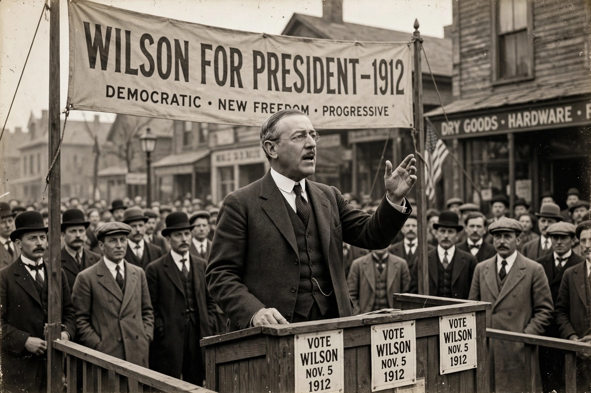

| New Freedom | |
|---|---|
| Proponent | Woodrow Wilson |
| Announced | 1912 presidential campaign |
| Key ideas | Antitrust enforcement, tariff reduction, banking reform, free enterprise |
| Major laws | Underwood Tariff, Federal Reserve Act, Clayton Antitrust Act |
The New Freedom was the policy program of Woodrow Wilson, the Democratic candidate for President of the United States in the election of 1912. Wilson developed the ideas in campaign speeches and in his 1913 book The New Freedom, with the assistance of advisers including Louis Brandeis. The program promised to restore free competition and equal opportunity by dismantling what Wilson called the "triple wall of privilege": tariffs, trusts, and high finance.
The New Freedom stood in contrast to Theodore Roosevelt's New Nationalism. Roosevelt argued that large corporations were a permanent feature of modern life and should be controlled by a strong regulatory state. Wilson and Brandeis held that monopoly itself was the problem: government should break up trusts, enforce competition, and then withdraw, leaving small businesses and entrepreneurs free to compete. Wilson summarized the difference by saying the New Freedom sought to liberate rather than regulate business energy.
During Wilson's first term, Congress enacted much of the program:
Although Wilson later adopted more regulatory approaches resembling Roosevelt's, particularly during wartime mobilization, the New Freedom's first-term legislation reshaped American banking, trade, and competition policy for the remainder of the twentieth century.
See also: Progressive Era, Presidency of Woodrow Wilson